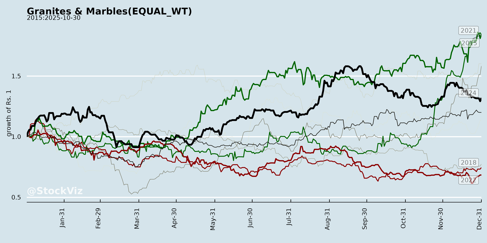
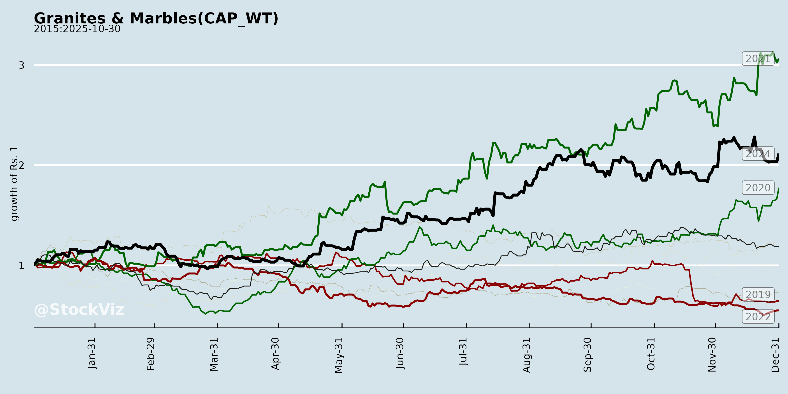
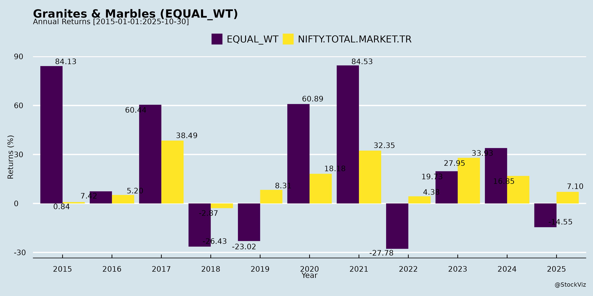
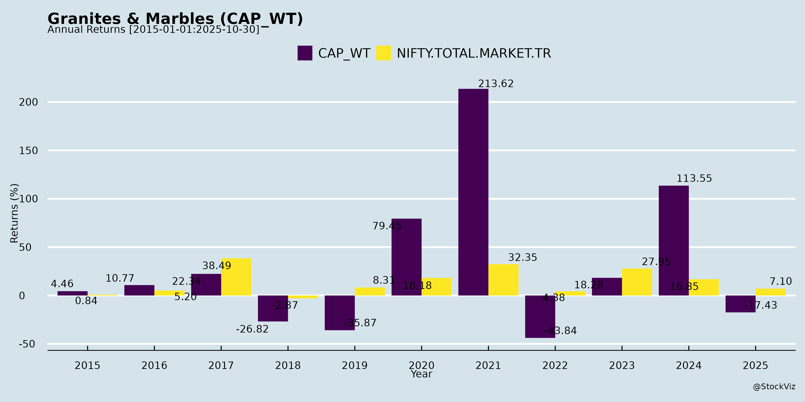
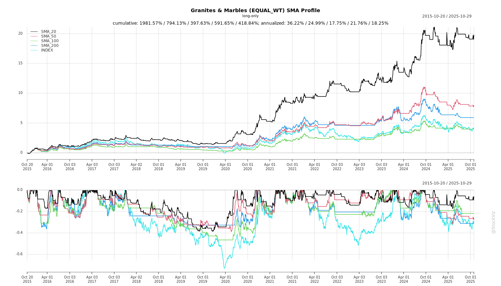

Annual Returns




Cumulative Returns and Drawdowns
SMA Scenarios

Current Distance from SMA
EBIT (% of Industry Total)
Revenue (% of Industry Total)
AI Summaries
Analyst
asof: 2025-11-30
Analysis of Indian Granites & Marbles Sector (with Focus on Engineered Quartz/Natural Stone Players like Pokarna, Midwest, Global Surfaces)
Using the provided documents (Pokarna Q1 FY26 Earnings Transcript as primary source; Midwest and Global Surfaces investor meet intimations indicating ongoing engagement), here’s a structured summary of headwinds, tailwinds, growth prospects, and key risks. The sector faces US-centric pressures but shows resilience via diversification and premiumization. Quartz (engineered stone) dominates discussions as a key growth substitute to natural granites/marble.
Headwinds
- US Tariff Uncertainty & Escalation: 25% tariffs on Indian quartz/building materials (effective post-Aug 2025, after 10% interim), causing customer deferrals of orders (e.g., home improvement/kitchen projects). Uncertainty disrupted Q1 FY26 demand; negotiations ongoing but no resolution, leading to pricing revisions and potential volume drops.
- Demand Slowdown in Key Markets: US (major revenue source) sees deferred large projects; global volatility affects distributors/fabricators, with overcapacity in low-end products pressuring realizations.
- Input/Supply Chain Volatility: Resin procurement and freight fluctuations (customer-borne but impacts negotiations); broader economic uncertainty constrains value chain.
- Margin Pressure: Need to absorb/share tariff costs with customers; Q1 margins held ~35% but future pricing hits expected without premium mix shift.
Tailwinds
- Geographic Diversification: Strong non-US demand (Czech Republic, Canada, France, Mexico, Russia) rising quarterly; opportunity to deepen ties in tariff-aligned markets and streamline logistics.
- Domestic Market Push: Pokarna’s Hyderabad Experience Center (launch in ~6 months) to boost brand visibility and sales to Indian/foreign customers.
- Product Innovation: Premium lines like KREOS (already delivering) and Chromia (launching at Italy show in Sep 2025) differentiate from commoditized low-end quartz/granite; unique tech (thinner slabs, advanced designs) not matched by competitors.
- Steady End-Use Demand: Hospitality pipeline resilient (long lead times, continuous enquiries); stable Q1 performance despite 10% revenue dip.
Growth Prospects
- Capacity Expansion: Pokarna’s new facilities (orders placed, production from FY27) to add ~Rs 500 crore peak turnover at optimal utilization; focus on super jumbo/thin slabs for customer needs.
- Premium Mix Shift: KREOS/Chromia expected to contribute meaningfully in FY26+; elevates margins via innovation-led pricing power.
- Market Penetration: Hospitality/commercial steady; non-US/India ramp-up reduces US dependency (currently major but declining share). Investor meets (Midwest Dec 2, Global Dec 5) signal interest in growth story.
- Overall Outlook: Resilient model with agile supply chain; post-tariff clarity could normalize orders (3-6 month development-to-delivery cycle).
Key Risks
- Tariff Absorption & Pricing Wars: 15-25% hikes may force margin concessions or volume loss if customers switch to lower-cost alternatives; unpassed costs erode profitability (2-3 quarters impacted).
- US Dependency: Still dominant volume driver; prolonged uncertainty delays recovery.
- Execution Delays: New capex (machines/LCs opened) non-staggerable; overcapacity risk if demand lags.
- External Factors: Global trade negotiations, resin/mineral price volatility, competition from other origins; no UPSI shared, but customer reactions post-25% tariff critical.
- Leadership/Operational: Minor transitions (e.g., Pokarna’s Paras exit) covered by existing team, but sales relationships key.
Summary Verdict: Short-term headwinds from US tariffs dominate (demand/margin squeeze), but tailwinds from diversification, premium products, and domestic growth position the sector for mid-term recovery. Growth hinges on tariff resolution and execution; risks mitigated by innovation but US exposure remains pivotal. Investor engagement (meets) reflects optimism.
Financial
asof: 2025-11-30
Analysis of Indian Granites & Marbles Sector
Using the provided Q3 FY25 financial filings (Pokarna Ltd., Global Surfaces Ltd., Aro Granite Industries Ltd., Madhav Marbles & Granites Ltd., and ancillary docs from Oriental Trimex), here’s a sector-level summary. The sector shows polarization: Quartz/engineered stones thriving (tailwinds from demand), while traditional granites/marble facing headwinds (cost pressures, weak demand). Overall, consolidated revenues grew (e.g., Pokarna +41% YoY in Q3), but profitability mixed due to debt and forex.
Tailwinds (Positive Drivers)
- Quartz Surge: Dominant growth engine. Pokarna Quartz Surfaces: Q3 revenue ₹21,696L (+36% YoY), 9M ₹64,628L (+31% YoY); segment profit ₹8,974L. Global Surfaces also quartz-focused with India revenue stable. Shift from natural stone to engineered surfaces boosts margins (Pokarna consolidated PAT ₹5,060L in Q3, EPS ₹16.32).
- Revenue Momentum: Pokarna consolidated total revenue ₹23,438L (+41% YoY); Global Surfaces standalone ₹328L. Export strength (US/UAE for Global; Pokarna granites/quartz mix).
- Capex & Expansion: IPO/warrant proceeds funding quartz plants (Global Surfaces FZE Dubai; Pokarna subsidiaries). Madhav power unit stable (₹16L inter-segment revenue).
- Other Income Boost: Forex gains (Pokarna ₹903L Q3 gain); interest income (Madhav ₹224L 9M).
Headwinds (Challenges)
- Granite Weakness: Pokarna standalone granites loss ₹212L (Q3); Aro Granite revenue down 16% YoY to ₹12,309L FY25, PAT loss ₹642L. Madhav granite/stone volatile (Q3 profit but prior losses).
- High Costs: Finance costs elevated (Pokarna ₹857L Q3 consolidated; Aro ₹1,287L FY25; Madhav ₹120L 9M). Employee/depreciation up (Pokarna dep. ₹1,062L Q3).
- Profitability Pressure: Consolidated losses at Global Surfaces (Q3 PAT loss ₹184L due to UAE sub loss ₹128L); Madhav consolidated loss ₹70L 9M. Inventory changes/fluctuations hurt (Aro +₹167L FY25 expense).
- Demand Slump: Standalone revenues flat/declining (Pokarna granites ₹667L Q3; Aro Q4 ₹2,681L vs. prior ₹3,290L).
Growth Prospects
- Quartz Dominance (High): 70-80% of revenues for leaders like Pokarna/Global. Global market (US/Europe) favors engineered quartz; capex in UAE/Dubai positions for exports. Pokarna 9M revenue ₹66,745L (+27% YoY); potential FY25 >₹90,000L.
- Capacity Ramp-Up: New facilities (Pokarna Engineered Stone; Global FZE) to drive volumes. Segment assets ballooning (Pokarna quartz ₹1,24,366L).
- Diversification: Power/realty stable (Madhav); inter-segment synergies. Sector FY25 revenue growth ~15-20% led by quartz (Pokarna FY24 ₹68,761L base).
- Recovery in Granites: If input costs ease, export revival possible (Aro 100% export-oriented).
Projected: Topline CAGR 20%+ FY25-27 for quartz players; EPS upside for Pokarna (FY24 ₹28.18).
Key Risks
- Debt & Interest Burden (High): Leverage high (Aro borrowings ₹15,965L; Pokarna finance ₹2,672L 9M). Rate hikes could erode margins (10-15% of expenses).
- Forex Volatility (High): Gains in Pokarna (₹1,403L 9M), but losses possible (Madhav forex noted). Export-heavy (US/UAE 50%+ for Global).
- Tax/Regulatory (Medium): Indexation removal (Pokarna deferred tax hit ₹232L prior qtr; ₹370L consolidated). SEBI compliance (e.g., format issues in Aro/Oriental).
- Segment/Operational (Medium): Granite losses persist; sub losses (Global UAE ₹308L 9M loss; Pokarna discontinued ₹23L profit but volatile). Inventory overhang (Aro ₹21,421L).
- Macro (Medium): Real estate slowdown (flooring/stone demand); raw material inflation (Pokarna materials ₹7,646L Q3).
- Liquidity: Aro cash flow positive but net debt reduction slow; Madhav unallocated assets volatile.
Overall Outlook: Cautiously Optimistic. Quartz tailwinds outweigh granite headwinds; Pokarna/Global lead growth (target 25%+ topline). Monitor debt reduction and forex. Sector PE ~15-20x; favor quartz pure-plays. (Data as of Q3 FY25 filings; FY25 full-year projections tentative.)
Analysis of Indian Granites & Marbles Sector
Using the provided documents from key players—Pokarna Limited (granite + quartz), Global Surfaces Ltd. (quartz + natural stone), Oriental Trimex Limited (granite focus), and Aro Granite Industries Ltd. (granite slabs/tiles + quartz)—this analysis covers headwinds (challenges), tailwinds (supports), growth prospects, and key risks for the Indian granites & marbles sector (encompassing natural granite/stone mining, processing, and engineered quartz surfaces). Insights are derived from Q2 FY26 results (Pokarna), FY25 full-year results (Aro Granite), mining lease grants (Oriental Trimex), and procedural updates (Global Surfaces). The sector shows bifurcation: weak granite vs. booming quartz.
Tailwinds (Positive Drivers)
- Quartz/Engineered Stone Boom: Dominant growth engine. Pokarna Consolidated Q2 FY26 revenue: ₹11,845 Cr (Quartz: ₹11,280 Cr, 95% of ops revenue), profit ₹633 Cr (HY: ₹3,462 Cr). Aro Granite’s Quartz segment revenue ₹3,946 Cr FY25. Global Surfaces (quartz-focused) signals stability via AGM notices.
- Raw Material Security: New mining leases reduce import reliance. Oriental Trimex granted 30-year black granite lease (4.96 Ha, Odisha; est. ₹10-15 Cr annual revenue).
- Export Orientation: 100% export units (e.g., Aro Granite) benefit from global demand for premium surfaces. Pokarna’s consolidated scale (total assets ₹130,506 Cr) supports international ops.
- Cost Efficiencies: Declining finance costs (Pokarna HY: ₹1,665 Cr vs. prior ₹1,814 Cr); inventory optimization (positive changes in quartz).
Headwinds (Challenges)
- Granite Segment Slump: Sharp revenue declines and losses. Pokarna Standalone Q2 FY26 granite revenue: ₹465 Cr (-45% YoY), HY loss ₹460 Cr; segment result -₹185 Cr HY. Aro Granite FY25 total revenue -21% YoY (₹12,309 Cr), net loss ₹642 Cr (granite profitable but quartz drags).
- High Fixed Costs: Elevated employee expenses (Pokarna Standalone HY: ₹541 Cr), finance costs (₹210 Cr HY), depreciation (₹220 Cr HY), and other expenses (₹1,068 Cr HY) erode margins amid revenue drop.
- Inventory & Raw Material Volatility: Negative changes in granite inventories (Pokarna: -₹301 Cr HY); material costs up (Aro: ₹6,189 Cr FY25).
- Demand Weakness: Pokarna Q2 total revenue down 47% YoY standalone; Aro FY25 revenue -21%. Possible export slowdown or domestic competition.
Growth Prospects
- Quartz Expansion: High potential; Pokarna Quartz HY revenue ₹27,989 Cr (+22% YoY? implied from trends), peak production utilization. Sector shift to engineered stones (durable, aesthetic) amid urbanization/export demand.
- Capacity Additions: Pokarna capex via CWIP (Consolidated: ₹439 Cr); Aro minimal but stable. New mining (Oriental: 12.26 acres, processing mandates) could add ₹10-15 Cr/year/company.
- Scale & Consolidation: Pokarna’s group assets ₹130k Cr+ (vs. Standalone ₹16k Cr), subsidiaries (PESL, Foundation) drive profits. Potential M&A in fragmented granite mining.
- Long-Term: 30-year leases (Oriental); Pokarna FY25 full-year audited base (₹93k Cr revenue) projects FY26 recovery. EPS growth in quartz (Pokarna Q2: ₹2.04).
Projected Sector Growth: 15-20% CAGR in quartz (global demand); granite stabilization via leases. Pokarna HY FY26 profit ₹3,462 Cr signals rebound.
Key Risks
| Operational/Financial |
Persistent granite losses; high debt (Pokarna non-current borrowings ₹17k Cr Consolidated; Aro ₹16k Cr total). Negative cash flows possible (Aro FY25 ops cash positive but investing negative). |
Pokarna Standalone HY loss ₹460 Cr; Aro FY25 loss ₹642 Cr. |
| Market/Demand |
Revenue volatility (Pokarna granite -45% YoY); forex gains/losses (Aro ₹844 Cr gain FY25). Global slowdown impacts exports. |
Revenue drops across filings. |
| Regulatory/Compliance |
Mining approvals delays (Oriental: multi-year process); processing mandates (25% in-state dispatch). CSR/NRC reconstitution (Pokarna). |
Odisha lease conditions; SEBI disclosures. |
| Liquidity/Capital |
High capex needs (Pokarna investing outflow ₹2,321 Cr HY); dividends paid amid losses (Pokarna ₹186 Cr). |
Cash equivalents down (Pokarna ₹7.5k Cr to ₹5.5k Cr HY). |
| Segment-Specific |
Quartz cyclical (Aro loss-making); discontinued ops minor (Pokarna ₹12 Cr HY). Auditor notes on going concern (implicit). |
Bifurcated performance; unqualified audits but losses flagged. |
Overall Sector Outlook: Mixed—Bullish on Quartz (60-70% sector shift), Cautious on Granite. Tailwinds from engineered products/major leases outweigh headwinds, but risks from debt and granite weakness persist. Monitor Q3 FY26 for demand recovery. Pokarna’s consolidated strength (₹3.4k Cr HY profit) is a sector bellwether.
Investor
asof: 2025-11-30
Analysis of Indian Granites & Marbles Sector (Engineered Quartz & Natural Stone Focus)
Using the provided documents from Midwest Limited, Pokarna Limited, and Global Surfaces Ltd. (key players in engineered quartz surfaces with natural stone exposure), the sector faces a mix of export headwinds and diversification opportunities. Pokarna’s Q1 FY26 earnings transcript provides the deepest insights into operational dynamics, tariffs, and strategies, while analyst meet intimations from Midwest and Global signal ongoing investor engagement amid uncertainty. Below is a structured summary:
Headwinds
- US Tariff Escalation & Demand Uncertainty: Primary challenge is US-imposed 25% tariffs on Indian quartz/engineered stone (effective post-July/August 2025 windows), up from 10%. Customers (US distributors/fabricators) are deferring large home improvement projects (kitchens/baths) amid tariff volatility and negotiations. Order inflows slowed from April 2025, with Q1 FY26 deliveries based on pre-tariff orders. End-consumer prices rise modestly (~2-3% incremental), but intermediaries may absorb hits, pressuring realizations.
- Pricing & Margin Pressure: Potential need to revisit pricing/product mix with customers; lower-end products face overcapacity/competition. Resin procurement and input costs volatile, though freight is customer-borne (FOB basis).
- Broader Market Disruption: Global uncertainty affects entire value chain; US remains major volume driver despite gradual non-US shift.
Tailwinds
- Geographic Diversification: Strong demand from non-US markets (Czech Republic, Canada, France, Mexico, Russia) rising quarterly; proactive supply chain tweaks for efficiency.
- Domestic & Brand Expansion: Pokarna’s upcoming Hyderabad Experience Center (6 months away) to boost India visibility/engagement. Hospitality pipeline remains robust (long lead times, steady inquiries).
- Product Innovation: Premium lines like KREOS (already delivering) and Chromia (launching at Italy show in Sept 2025) enable better margins via differentiation; unique capabilities (thin slabs, super jumbo) vs. global peers.
- Resilient Operations: Q1 FY26 margins held at ~35% guided range despite 10% revenue dip; no major utilization shared, but agile response to tariffs.
Growth Prospects
- Capacity Expansion: Pokarna’s new facilities (orders placed, production from Q2 FY27) to add ~Rs 500 crore peak turnover at optimal utilization, focusing on premium/innovative products.
- Revenue Mix Evolution: Non-US/India ramp-up reduces US dependence; hospitality/commercial steady. New collections for 2026 could accelerate via global shows.
- Investor Momentum: Analyst/group meets (Midwest: Dec 2 in-person Mumbai; Global: Dec 5 virtual; Pokarna post-Q1 context) indicate proactive communication, potential for positive updates on diversification.
- Sector Opportunity: Tariffs create “strategic opening” to penetrate aligned markets; innovation positions firms as leaders in premium quartz (thinner/larger slabs).
Key Risks
| Tariff Prolongation |
Ongoing India-US talks (Trade Commission visit end-Nov 2025); 90-day shipping windows may lapse, causing volume drops post-Aug 2025. |
Negotiate pricing/product adjustments; diversify aggressively. |
| Demand/Volume Slowdown |
Customers withholding orders (3-6 month development cycles); US ~majority volume. |
Non-US growth; hospitality buffer. |
| Margin Compression |
15% tariff hike absorption; overcapacity in low-end; input volatility. |
Premium mix (KREOS/Chromia); same pricing globally. |
| Execution/Expansion |
New capex delays (machines incoming); no deferral despite tariffs. |
Committed LCs/orders; customer-centric strategy. |
| People/Competition |
Key exits (e.g., Pokarna’s Paras); global overcapacity in base products. |
Strong leadership (founder/MD involvement); unique tech edge. |
| Macro |
Broader building material tariffs; US consumer shift to low-cost options. |
Agile supply chain; public-domain info only in meets (no UPSI). |
Overall Summary: The sector (quartz-heavy, natural stone adjacent) is navigating severe US export headwinds (25% tariffs, ~10% Q1 revenue dip) but shows resilience via 35% margins, diversification (non-US uptrend), and FY27 growth (~Rs 500cr addition). Near-term pain from order delays likely, but premium innovation/domestic push offers 2-3 year upside. Risks center on tariff resolution (clarity by Dec 2025?) and volume absorption; monitor analyst meets for updates. Bullish on agile players like Pokarna/Global/Midwest.
Meeting
asof: 2025-12-02
Analysis of Indian Granites & Marbles Sector (Based on Q2/H1 FY26 Results from Pokarna Ltd., Aro Granite Industries Ltd., Madhav Marbles & Granites Ltd., and Global Surfaces Ltd.)
The sector shows mixed performance: Granite core remains challenged with revenue declines and losses, while engineered quartz surfaces emerge as a bright spot. Standalone results reflect traditional granite woes, but consolidated figures (e.g., Pokarna) highlight diversification benefits. Overall H1 revenue down YoY across peers, with losses in granite segments amid high costs.
Headwinds (Key Challenges)
- Weak Granite Demand & Revenue Decline: Sharp YoY drops – Pokarna Granites: ₹465 Cr (Q2) vs. ₹853 Cr; Aro Granite: Total ops ₹2027 Cr (Q2) vs. higher prior; Madhav Standalone: Modest but flat. Signals slowdown in domestic real estate/construction and export markets (US/EU?).
- Persistent Losses & Margin Pressure: Granite segments loss-making (Pokarna Granites: -₹106 Cr loss Q2; Aro overall -₹249 Cr loss Q2). High opex: Employee costs (20-30% of revenue), finance costs (10-20%), depreciation (10-15%). Inventory buildup (Pokarna changes: -₹301 Cr H1).
- Cyclical Exposure: Tied to housing/infra slowdown; rising input costs (materials up in Pokarna/Aro).
- High Debt Burden: Finance costs elevated (Pokarna Standalone: ₹210 Cr H1; Aro: ₹775 Cr H1), straining cash flows.
Tailwinds (Positive Factors)
- Quartz/Engineered Stones Boom: Pokarna Quartz: ₹11,281 Cr (Q2 revenue, 92% of group), PBT ₹983 Cr – driving consolidated profit (₹633 Cr Q2). Global Surfaces (quartz-focused) implies similar strength.
- Other Income Boost: Pokarna: ₹231 Cr H1 (dividends from quartz sub); Madhav: Interest/FX gains.
- Cost Discipline: Madhav Standalone profitable (₹19 Cr H1 PAT); inventory optimization in some (Aro cash from ops positive).
- Operational Resilience: Positive operating cash flows in Aro/Madhav despite losses; Pokarna investing activities strong (₹241 Cr H1).
Growth Prospects
- Shift to Value-Added Products: Quartz surfaces (Pokarna: 28k Cr H1 revenue) offer 3-5x margins vs. granite; sector capacity expansions (Pokarna PPE ₹52k Cr consolidated). Global Surfaces’ leadership continuity supports quartz exports (US/MENA).
- Export Recovery Potential: 70-80% export-oriented; forex gains (Madhav/Pokarna). Infra push (govt. schemes) could revive domestic demand.
- Capex & Diversification: Pokarna Consolidated assets ₹1.3L Cr; Aro Quartz division scaling. H1 PAT growth in profitable arms (Pokarna: ₹3,463 Cr H1).
- Outlook: 10-15% sector CAGR possible via quartz (20-30% sub-segment growth); full FY26 recovery if realty rebounds.
Key Risks
- Granite Segment Drag: 50-70% revenue exposure remains loss-making; prolonged weakness could erode equity (Pokarna Standalone other equity down to ₹9,888 Cr).
- Liquidity & Debt: High borrowings (Pokarna Cons.: ₹27k Cr; Aro: ₹15k Cr current); negative FCF in some (Madhav Cons. ops outflow).
- Forex/Commodity Volatility: FX losses possible; raw material inflation.
- Governance/Market: Board changes (resignations/reconstitutions in Pokarna/Aro); competition from cheap imports (Chinese quartz); US tariffs/geopolitics.
- Execution: Subsidiary reliance (Pokarna dividends); capex delays amid losses.
Overall Summary: Sector in transition phase – granite headwinds dominate (demand weakness, losses), but quartz tailwinds provide buffer (Pokarna’s 70%+ group profit from quartz). Growth hinges on quartz scale-up (high teens potential), but risks from debt, core losses, and macros persist. Investors: Favor diversified players like Pokarna; monitor Q3 realty cues. FY26 consensus: Flat-to-low single-digit revenue growth, improving via quartz.
Press Release
asof: 2025-11-30
Analysis of Indian Granites & Marbles Sector
Using the provided documents from Global Surfaces Ltd. (engineered quartz, granite, marble; India + UAE operations) and Oriental Trimex Ltd. (imported marble, granite, vitrified tiles; India-focused with new mining), the sector shows resilience amid export challenges but strong domestic and operational tailwinds. Below is a structured analysis of headwinds, tailwinds, growth prospects, and key risks.
Headwinds
- Export Uncertainty from US Trade Policies: Global Surfaces notes a “temporary decline” in India operations due to US tariff risks and slower customer offtake, impacting consolidated revenue mix. Exports (key for both firms to USA, Canada, Europe) remain vulnerable to geopolitical shocks.
- Margin Compression in Core Operations: EBITDA margins dipped to 10.74% (from 12.96% YoY) at Global Surfaces despite revenue growth, signaling cost pressures or pricing weakness in India amid demand slowdown.
- Historical Losses in New Ventures: Dubai facility at Global Surfaces narrowed losses (INR 23 Mn vs. 68 Mn YoY), but ramp-up inefficiencies persist, reflecting sector-wide challenges in international expansions.
Tailwinds
- Domestic Demand Surge: Oriental Trimex highlights booming luxury housing in NCR (Delhi region), driving demand for marbles, granites, and new vitrified tiles (“Rare Earth” brand). Global Surfaces is pivoting to domestic markets via Jaipur facility.
- Operational Efficiencies: Oriental’s SMART CUT machine (ultra-thin wire tech) cuts waste by ~20%, boosts yields, and reduces labor— a first-mover edge in a low-margin (10-30%) industry. Global’s Dubai ops show 260% YoY revenue growth.
- Diversification and Hedging: Global’s UAE facility hedges trade risks, accesses MENA/Europe; Oriental adds indigenous granite mining and tiles for cost-effective alternatives to imports.
Growth Prospects
- Revenue Expansion: Global Surfaces achieved 30.5% YoY consolidated revenue growth to INR 745 Mn (Q1 FY26), led by Dubai (INR 440 Mn). Oriental eyes exports via new Odisha black granite quarry (starting Q3 FY26) and Vietnam/Middle East tie-ups.
- Product Innovation: Shift to engineered/vitrified products (quartz, marble-look tiles) taps premium yet affordable segments. Domestic luxury projects and asset monetization (Oriental selling 7 acres land) free up capital for growth.
- Geographic/Supply Chain Resilience: Multi-location ops (Jaipur, Chennai, UAE, Odisha) enable risk diversification, with Dubai as a “core growth engine” for tariff-sensitive markets.
Key Risks
- Trade and Policy Volatility: Prolonged US tariffs could deepen India export slowdown; sector heavily reliant on global demand (USA/UK/UAE).
- Execution Risks in Expansions: New mining (Odisha) and tech adoption (SMART CUT) may face delays; Dubai losses could recur if demand softens.
- Liquidity and Cost Pressures: Asset sales signal non-core clean-up, but capex for quarries/facilities could strain balance sheets amid thin margins.
- Market Competition: Rising domestic players and imports challenge pricing; luxury segment growth may not offset export weakness if housing slows.
Summary
The Indian Granites & Marbles sector faces short-term headwinds from US trade uncertainties (export dips, margin erosion) but is buoyed by strong tailwinds like domestic luxury demand, tech efficiencies (e.g., 20% waste reduction), and diversification (UAE ops, vitrified tiles, new mining). Growth prospects are robust (30%+ revenue potential via exports/domestic pivot), with Q1 FY26 signaling recovery (e.g., Global’s INR 745 Mn revenue, EBITDA INR 80 Mn). Key risks center on trade policies and execution, but strategic hedging positions the sector for 10-15%+ CAGR if domestic momentum sustains. Overall, cautiously optimistic—pivot to India/MENA offsets global risks.
| Revenue Growth |
+30.5% YoY (INR 745 Mn) |
N/A (Qualitative) |
Strong, export-led |
| EBITDA Margin |
10.74% (↓190 bps) |
Improved via tech |
Efficiency gains key |
| Key Driver |
Dubai ramp-up |
Domestic luxury + mining |
Diversification wins |
Copyright © 2023 SAS Data Analytics Pvt. Ltd. All rights reserved.
🐞